Using Transaction Matching
In this chapter, we will discuss one of my favorite OneStream MarketPlace solutions – Transaction Matching.
As part of the OneStream Financial Close, this solution is beneficial because it takes a very manual, tedious process and transforms it into an automated approach. Leveraging rules, the solution will automatically match transactions while identifying Unmatched items that need to be addressed.
In my previous life, I would perform these tasks in Excel using formulas and color coding. I would spend significant time concatenating fields, performing look up formulas, Variance Calculations, highlighting, etc., to try to determine what was relevant in my data. My process was time-consuming, error prone, and inconsistent. Moving out of the manual process to a solution allowed me to focus on transactional issues or open items versus data cleansing and clearing.
Matching is typically done for Financial Reconciliations such as Bank, Intercompany, Subledgers, Suspense, or Clearing Accounts, to name few. However, matching can also be performed on non-financial data like inventory counts, hours, SKUs, GL migrations, system to system tie outs, etc. Matching is unlimited in its possibilities. Anywhere you perform a manual review of one data set to another – to ensure both sources contain the same information – matching can be leveraged.
In Chapter 6, we discussed the setup of the Match Set and the Administrator’s functions and responsibilities. Now, we will focus on the User and walk through the Match Set interface and the actions that can be performed around the different types of transactions, along with various roles and responsibilities. Let’s start with the Workflow.
Using Transaction Matching
Matching Workflow
The Matching Workflow represents a Match Set, and each Match Set is defined as its own unique Workflow. The number of Match Sets is dependent on your matching process and security requirements which are defined during implementation (Chapter 7).
To access the Matched and Unmatched transactions, you will navigate to the specific Workflow to complete your responsibilities. Transactions should be loaded into the Workflow period they relate to in order to ensure proper cutoff. The system tracks both the period in which the transactions are loaded, as well as what period the transaction is Matched. Unmatched transactions automatically persist into future periods with no additional action needed by the User.
When leveraging the Workflow period, it is important to understand that the state of a transaction – Unmatched or Matched – is not captured period over period. This means that if I have a transaction Unmatched in 2022M3 that is subsequently Matched in 2022M4, the transaction will no longer appear Unmatched in the system regardless of the period I view. If I navigate back to 2022M3, the transaction will appear Matched.
Also, transactions are only viewable in the period they are loaded or future periods. Therefore, the 2022M3 transaction, previously discussed, is only viewable from the 2022M3 period forwards.
You will not see this transaction in 2022M2 or prior because it did not exist at that time. This prevents you from accidently referring to the transaction in M2 – when it didn’t exist – and also supports proper cutoff, which will be discussed later in this section.
Using Transaction Matching
Workspace
The Transaction Matching Workspace is where you will perform your matching responsibilities.
The Workspace is made up of key pages which include the Scorecard, Matches, Transactions, Administration, Settings, and Help. The Workspace will default to the Transactions page as this is where most of the work occurs. You can move between the pages by utilizing the navigation icons in the top-right corner. The icons that are visible to a User will depend on the User’s security level. Within this chapter, we will walk through the Scorecard, Matches, and Transactions pages.
Using Transaction Matching
Matches Page
The Matches page is where you can view the details associated with specific matches made in the period, and perform actions like accepting, approving, or unmatching matches if security permits. The Matches page can be broken up into three key areas:
Header
Matches Grid View
Detail Match Pane
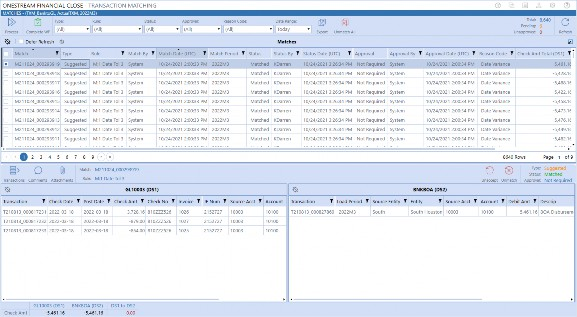
Figure 8.2
Using Transaction Matching › Matches Page
Matches Header
The header section, as shown below, contains the following key action icons: Process, Complete Workflow, Export, and Unmatch All. In addition, the header contains the match statistics and predefined filter capabilities. In the following paragraphs, we will walk through all these components in detail.
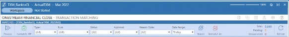
Figure 8.3
Using Transaction Matching › Matches Page › Matches Header
Process
The Process icon is used to run the active Match Rules for the given period.
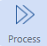
Figure 8.4
Match Rules will run against all Unmatched transactions based on the Workflow period (i.e., all Unmatched transactions from the current and prior Workflow periods).
Although typically scheduled to run automatically with the data load, any role that has access to the Match Set – with the exception of the Viewer and Commenter roles – can manually run the process if the Workflow is not yet marked complete. The results of the process run are stored in the Task Activity log.
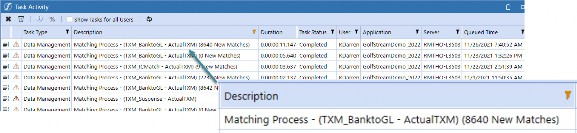
Figure 8.5
| Note: while the match process is running, you will not be able to perform manual matching within the Transactions page because the transactions are being used by the process. Also note, that only one active job per Match Set can run at a time. |
Using Transaction Matching › Matches Page › Matches Header
Complete Workflow
Completing the Workflow allows an organization to accurately reflect that the matching process is done for the period. Users with access to the Match Set will have access to this icon. The Complete WF icon will appear until you select it.
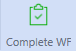
Figure 8.6
Once selected, the icon will update to show the Revert WF icon at which time the Scorecard, Matches, and Transactions pages will be unavailable. No additional actions can be taken in that Workflow period as the Workspace will appear as shown below.
If you need to perform actions on the transactions for that period, the Workflow will need to be reverted. The Revert WF icon allows you to reopen the Workflow for update purposes.
Figure 8.7
Also, note that the Workflow can be locked for a specific period. Locking (an example is in Figure 8.8) is used to prevent you from importing data. You will also not be able to complete or revert the Workflow if the period is locked. However, locking does not prevent you from actioning transactions. If the period is locked and the Complete WF has not been set, you can still match, unmatch, accept, suspend, request deletion, etc.
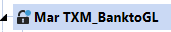
Figure 8.8
Using Transaction Matching › Matches Page › Matches Header
Filters
There are multiple filters available within the header section. These top filters (Figure 8.9) are applied to the grid and narrow down the matches presented, based on the filters selected. Filtering is valuable in being able to quickly get to specific matches so you can accept or approve the match, unmatch transactions if a manual match was done incorrectly, or simply to find matches that were made for a particular reason based on a Reason Code. Matches are just as important as Unmatched transactions in that they tell a story. Filters allow you to slice the matches into a view that is important to you and provide efficiency. The top filters include six key areas that Users tend to search: Type, Rule, Status, Approval, Reason Code and Date Range.
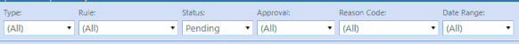
Figure 8.9
Using Transaction Matching › Matches Page › Matches Header › Filters
Type
The Type filter retrieves the matches based on how the match was made. Matches are made either through rules that are set as Automatic or Suggested, or through the User manually matching the transactions. With this filter, you can either view All matches or by the specific type: Automatic, Suggested, or Manual.
Pulling back suggested matches is important because all suggested matches must be accepted by a User for the match to be considered complete and may require approval if this option is turned on. Manual matches are also important because they too can require an approval process but – more importantly – Approvers and auditors prefer seeing all the manual matches made in a given period to understand why manual intervention was required.
Using Transaction Matching › Matches Page › Matches Header › Filters
Rule
The Rule Filter allows you to view matches by the rule that was used to create the match. As an example, if a rule allows for tolerances, you may want to pull all the matches with tolerances to generate a Journal correction. Or, if during implementation you determine a rule needs to be corrected or changed, you can filter for the matches made from the specific rule and unmatch the transactions associated, so the rule can be updated.
Using Transaction Matching › Matches Page › Matches Header › Filters
Status
Filtering for status will navigate you to all the matches that need to be Accepted. Within this filter you can choose All, Pending, or Matched. Users will filter for Pending matches to identify all matches awaiting acceptance. Users can also filter for the status of Matched which will remove those that have not yet been reviewed.
Using Transaction Matching › Matches Page › Matches Header › Filters
Approval
Most matches do not require an approval process, however; approval is an option that can be enabled for either suggested or manual matches. Typically, we see Workflow used around the manual match process on higher risk Match Sets. If utilizing Workflow, the approval process is performed on this page. This filter assists in getting to the matches in the different approval states. The filter includes All, Unapproved, Approved, or Not Required.
Using Transaction Matching › Matches Page › Matches Header › Filters
Reason Codes
Reason Codes are used to provide additional information regarding the match. Reason Codes can be assigned to the Match Rules and are associated to the matches that were created by the rule. An example would be a Reason Code of ‘Fees’. I may have several rules that match fee-type transactions, and if I assign the Fees Reason Code to each of these rules, I can pull all the matches related to fees by leveraging the Reason Code filter (versus pulling the matches rule by rule).
Reason Codes are also used in the manual matching process to identify reasons around why the manual match occurred.
Reason Codes are not required to be used or set up. The Reason Code filter will contain a list of all active Reason Codes set up by the Administrator. If Reason Codes are not set up or active, the filter will be set to All, and the drop-down will only contain an option for Unassigned.
Using Transaction Matching › Matches Page › Matches Header › Filters
Date Range
Filtering by date range minimizes the data being viewed. The filter allows you to view matches made Today, in the last 7 Days, or All. The default is set to Today so you can review the most recent matches made. If you change the filter to All, it will pull back all the matches made in the current Workflow period. If you want to see a match made in a previous period, you will need to navigate to that period in the Workflow.
Using Transaction Matching › Matches Page › Matches Header
Export
At times, you may need to export the Matched data to prepare Journal entries, provide additional reporting, or send information to Users outside the match process. The Export icon allows you to export the matches in the grid, based on the applied filters.
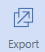
Figure 8.10
When selecting the Export icon, you will receive a dialog box allowing you to select the Export Type.
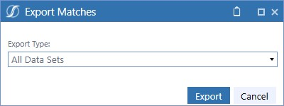
Figure 8.11
Data can be exported by all data sets, or for each data set individually. All data sets would be exported to provide the tolerance amount related to the matches, whereas you may only export a specific side of the match if a correction needs to be made or a Journal posted. Once the export type is chosen from the drop-down, you select the Export button. The system will prepare a .CSV file, open Excel, and present the data for you to save. An example of an export file is shown in Figure 8.12.
Export Type: All Data Sets:
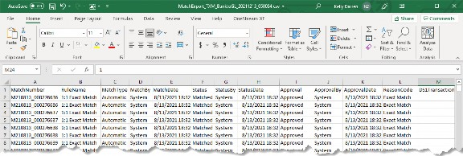
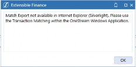
Note: There are a couple of nuances when using the exporting feature in matching. First, if the data security option is enabled, the Export icon will only be visible for the Transaction Matching Administrator. This is to ensure that data security is enforced, and you are not exporting matches that do not belong to you. Next, the export feature is only available in the Windows application. If you are running OneStream in the browser, and you attempt to export, you will receive an error message. Keep these things in mind when leveraging this functionality. Figure 8.13 |
Figure 8.12
Using Transaction Matching › Matches Page › Matches Header
Unmatch All
Match Sets can have a significant number of matches in a given period. The Unmatch All icon allows you to quickly unmatch all the transactions in the grid (Manual, Automatic, and Suggested matches), based on the filters applied (versus selecting matches one by one). This may be necessary if you need to update rules or reload a data file. This icon is only available to the Approver and Administrator roles.
Using Transaction Matching › Matches Page › Matches Header
Statistics
Statistics are critical for monitoring the matching process. Understanding where the matches are in the Workflow assists management in monitoring the process, as well as the overall risk in the data.
Match statistics are calculated by the system and are presented in a status bar located in the top-right portion of the Matches page.
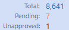
Figure 8.14
The statistics include: the total number of matches in the current grid view, a count of the suggested matches in the Pending state, and a count of the matches (either manual or suggested, depending on the options enabled) awaiting approval. The Calculations are based on the specific period selected and the top filters being applied.
The statuses are updated as events occur, such as when a Pending match is Accepted or matches Approved. Although the status is updated dynamically by the system, you may need to select the Refresh icon to update the status bar and grid information.

Figure 8.15
Using Transaction Matching › Matches Page
Matches Grid
The Matches Grid is a listing of all matches for a specified period. The grid is used to view a specific match, or to mass action matches if necessary.
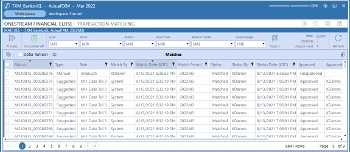
Figure 8.16
Although referred to as a grid, the display is a SQL Table Editor which limits the number of items viewable per page for faster performance. When selecting matches, you may need to cross pages to find a specific match. If you move from page to page, the matches selected via the check box will be retained. Also, if you select the check box at the top of the page in the first column, it will select all the matches on the current page only. If you want all matches across all pages, you will need to navigate page to page and select the top check box on each of the pages accordingly.
The number of items viewable on a page is based on the User’s platform security settings. By default, the attribute for the User is set to 50 grid rows per page and applies to any SQL Table Editor in the application. However, it is recommended that if the User will be working heavily in Transaction Matching that this be updated to 1,000 grid rows per page, limiting the number of pages the User needs to navigate.
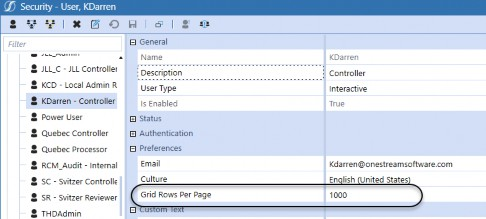
Figure 8.17
As noted earlier, the Matches Grid will display the matches made for the period. If the grid is empty, this should be an indication that data needs to be loaded for the period, the rule process needs to be run, or the filters set are too narrow in scope.
Filters can be set in the header, as previously discussed, or in a specific column using the filter icon in the column header. When using column filters, the filter icon will be orange, indicating that the column is being filtered. Unlike the Reconciliation Grid, column filters do not participate in saved state and will reset if you select a new header filter, action a match, or navigate away from the page. Therefore, you should leverage the header filters, when at all possible, for efficiency.
Using Transaction Matching › Matches Page › Matches Grid
Matches Grid Columns
There are many columns displayed within the grid that provide detailed information about the match. Each of the attributes are defined below.
| Column | Definition |
|---|---|
| The multi-select check box is used for mass actions, or to select multiple matches. | |
| Match | The Field represents the match number assigned by the system. The match number is a smart number which contains the Year, Month, and Day along with a unique ID. The color coding used in this example is to help break down the smart number into its pieces. The number will appear in the system as follows: M220116_000002206 Example: M220116_000002206 M = Match |
| Column | Definition |
|---|---|
22 = Year 01 = Month 16 = Day 000002206 = Unique ID | |
| Type | The Type field displays the match type which includes Automatic, Suggested, or Manual. |
| Rule | The Rule field will display the name of the Match Rule used to create that specific match. If the match was manually created, the field will display (Manual). |
| Match By | This field indicates the User ID associated with who created the match. If created by a rule, the User ID will be System. If manually Matched, this will indicate the User ID of the specific User. |
| Match Date (UTC) | Match date is the date and time stamp of when the match occurred, either through the processing of the rules or through manual matching. If Matched, Unmatched, and reMatched, the system only reflects the most recent date and time, based on Coordinated Universal Time (UTC). |
| Match Period | Represents the Workflow period in which the match occurred. |
| Status | Indicates whether the match is in a Matched or Pending state. Pending is the initial state of a match that was made from a suggested Match Rule. All suggested matches need to be Accepted or Approved in order to move to the Matched state. If Accepted or Approved, these matches can be reset to Pending – if needed – by unaccepting, or unapproving then unaccepting, at any point by a User with the appropriate security. |
| Status By | This field indicates the User ID of the last User to update the match status. This field will automatically populate upon match with the User ID of System if Matched by a rule, or the specfic User ID if manually Matched. As noted above, the status will only be updated if the match is actioned to Accept, Approve, Unaccept, or Unapprove. As it moves through these states, the User ID of the last person to action will be captured in this field. |
| Status Date (UTC) | Status date captures the date and time stamp the status was updated. The system only reflects the most recent date and time stamp, based on the latest update. |
| Approval | Identifies the approval state of the match from a Workflow perspective, which includes Not Required, Unapproved, or Approved. Matches created by Automatic Rules will be Approved upon match by the system. Suggested or Manual match approval requirements will depend on the options set by the Administrator at the Match Set level. If Workflow is turned on for a particular match type (Suggested or Manual), the match will be in the Unapproved state until Approved. If Workflow is not turned on for a particular match type, the Approval field will display Not Required upon match. If approval is required, matches can be Approved and Unapproved as needed. |
| Approval by | This field indicates the User ID associated with the approval process based on the last User to approve or unapprove the match. This field will automatically populate upon match with the User ID of System if Matched by an Automatic Rule or if the approval status is Not Required. If approval is required, this field will remain empty until it is Approved, at which time the system will track the User ID. The match |
| Column | Definition |
|---|---|
| can be Approved and Unapproved as needed with the system tracking the User ID of the last person to action. | |
| Approval Date (UTC) | Approval date captures the date and time stamp of when the approval or unapproval was performed. The system only reflects the most recent date and time stamp, based on the latest update. (If a match is not yet Approved, the Approval Date will display as 1/1/1900 12:00:00 AM.) |
| Reason Code | This field reflects the Reason Code associated with the Match Rule that created the match, or the Reason Code selected by the User when creating the manual match. Reason Codes are not required. If not used on the rule, or in the manual matching process, this field will populate with (Unassigned). |
| DS1 Total (Summary 1-3) | Aggregated amount of the Summary 1 value field, based on the transactions in Dataset 1 (DS1) of the match. The column header will display the alias name for the value field selected. There is a DS1 Total column for each summary level utilized. Each data set can have up to three summary fields selected. |
| DS2 Total (Summary 1-3) | Aggregated amount of the Summary 1 value field based on the transactions in Dataset 2 (DS2) of the match. The column header will display the alias name for the value field selected. There is a DS2 Total column for each summary level utilized. Each data set can have up to three summary fields selected. |
| DS2 Variance (Summary 1-3) | Calculated difference between DS1 Total minus DS2 Total for each summary level. The column header will display the alias name for the DS2 value field selected for Summary 1. Because a Match Set can have up to three summary fields, there is the possibility to have three calculated variance columns. |
| DS3* Total (Summary 1-3) | Aggregated amount of the Summary 1 value field, based on the transactions in Dataset 3 (DS3) of the match. The column header will display the alias name for the value field selected. There is a DS3 Total column for each summary level utilized. Each data set can have up to three summary fields selected. |
| DS3* Variance (Summary 1-3) | Calculated difference between DS1 Total minus DS3 Total for each summary level. The column header will display the alias name for the DS3 value field selected for Summary 1. Because a Match Set can up to three summary fields, there is the possibility to have three calculated variance columns. |
| Transactions (DS1) | Total number of transactions in DS1 that are part of the specific match. |
| Transactions (DS2) | Total number of transactions in DS2 that are part of the specific match. |
| Transactions (DS3*) | Total number of transactions in DS3 that are part of the specific match. |
| *DS3 is only visible if the Match Set is a three-way match. | |
Figure 8.18
Something to consider… if you do not see values in DS1, DS2, or DS3 Total columns or the value that appears is not what you would expect – it is an indication that the Summary levels (1-3) have not been set up properly. You will need to contact the Administrator of the Match Set to make the appropriate updates.
Using Transaction Matching › Matches Page › Matches Grid
Accessing a Match
Accessing a match is done from the Matches Grid. You can view a detailed match by clicking anywhere within the line associated with the specific match. Upon selection, the detailed match will appear in the bottom view. You can navigate from one match to the next by simply selecting the respective line in the Matches Grid.
You will notice that when you select a line, the check box to the far left will automatically be selected. Although you can select a match using the check box, it is not necessary and not recommended. The check box is required for mass action functionality, but ultimately is not needed for navigation purposes. Selecting a match by clicking on the line is much more efficient.
Using Transaction Matching › Matches Page › Matches Grid
Match Security
Match Sets can also have transaction-level security. Because the matching process may be similar across Users and Entities, leveraging a single Match Set is more efficient from an administrative perspective. Being able to restrict the transactions allows Users to move through their process without impacting others.
Security can be set up to restrict transactions based on Entity, IC, Entity or IC, or Entity and IC Dimension combinations. This feature is set by the Administrator. Security will limit the transactions that you can view and, in turn, will limit the matches you have access to. If you navigate to a match in the Matches Grid that does not contain any transactions within your security rights, the Detail Match pane will display a security message, as shown in Figure 8.19. However, if within the match there is at least one transaction (regardless of the data set), the full match is visible.
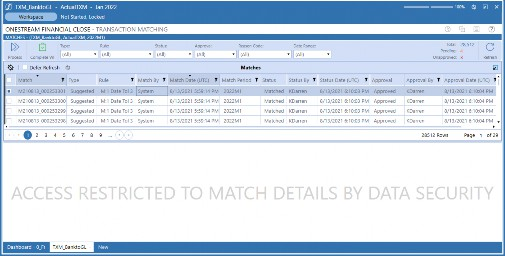
Figure 8.19
Using Transaction Matching › Matches Page › Matches Grid
Mass Actions
Mass action functionality allows you to efficiently perform your responsibilities. Rather than performing actions one by one, Preparers, Approvers, and/or Administrators can execute across multiple matches when ready. When utilizing mass actions, you can Accept, Approve, Unapprove, or Unmatch matches if you have the proper security.
To mass action a set of matches, you select the check box to the left of the specific match one by one, or select the line and use the ctrl or shift keys to quickly select multiple matches. Mass actions will only engage if you have more than one match selected.
All selected matches will appear in the bottom view and the mass action icons will appear as shown in Figure 8.20.
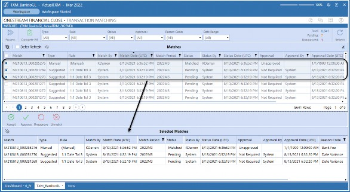
Figure 8.20
Based on the action icon selected, the system will update the matches that meet the requirements. If a match is selected that cannot be actioned as requested, you will receive a message indicating what actions were taken and why. See Figure 8.21 for a system message, and Figure 8.22 for updated matches. As a reminder, depending on the number of matches, the Matches Grid might contain multiple pages requiring you to navigate from page to page to find the specific matches you want to action.
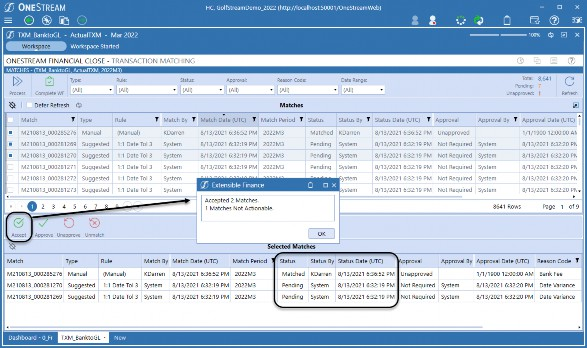
Figure 8.21
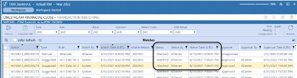
Figure 8.22
Using Transaction Matching › Matches Page
Detail Match Pane
The Detail Match pane is used to view the details of a selected match. You can review the transactions by data set, add or view comments and attachments, or action the match as needed. We will walk through the three main areas of the Detail Match pane which include:
Detail Match Header
Data Set Grids
Match Summary
Using Transaction Matching › Matches Page › Detail Match Pane
Detail Match Header
The header section contains the key attributes for the selected match. These are the same attributes that are displayed in the Match Grid and include the Match number and Rule which are visible in the center section of the header, as well as the Type, Status, and Approval located to the right.
These attributes were previously defined in Figure 8.18.
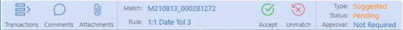
Figure 8.23
There are also action icons that appear in the header, which allow you to move the match through the process. There are multiple different actions available and what appears for you will depend on the match type, your role, and the state of the match.
We will walk through each match type and the actions available for the different roles, defining when and why a User may perform the specific actions. The action icons for each role, based on the match type, are also summarized below.
| Icon | Match Type | Preparer | Approver | Admin |
|---|---|---|---|---|
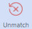 | Automatic | X | X | |
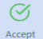 | Suggested | X | X | X |
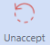 | Suggested | X | X | X |
| Icon | Match Type | Preparer | Approver | Admin |
|---|---|---|---|---|
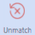 | Suggested/Manual | X | X | X |
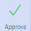 | Suggested/Manual (If enabled) | X | X | |
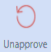 | Suggested/Manual (If enabled) | X | X |
Figure 8.24
Using Transaction Matching › Matches Page › Detail Match Pane › Detail Match Header
Automatic Matches
Automatic Matches are transactions that get Matched, based on an Automatic Rule. Automatic Rules are precise rules that – when met – should move the transactions off with no further actions needed. Preparers have visibility to these matches but cannot perform any actions on them. Only higher-level roles – Administrator and Approver – can update an automatic match by selecting the Unmatch icon, moving the transactions to the Unmatched state.
Unmatching automatic matches is not common in everyday operations. This function is typically used during implementations or with new rule creation. If the rule is not running as expected, it may need to be updated. Only rules without existing matches can be changed. Therefore, to update an existing rule, the existing matches need to be Unmatched. This process can only be performed by an Administrator or Approver for control purposes because, as we start changing rules within the Match Set, we are altering the process and the overall results. See Figure 8.25 for role-specific views related to an automatic match.
Using Transaction Matching › Matches Page › Detail Match Pane › Detail Match Header › Automatic Matches
Automatic Match
Preparer:
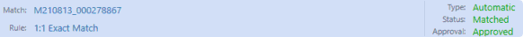
Approver/Administrator:
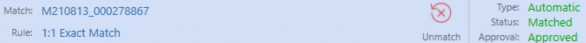
Figure 8.25
Using Transaction Matching › Matches Page › Detail Match Pane › Detail Match Header
Suggested Matches
Suggested Matches are transactions that get Matched based on a rule that is less precise and could result in invalid matches. We use suggested matches to ease the manual process. These types of rules will apply logic and create a match. However, because not all the matches may be valid, suggested matches have a Pending status. Upon review, the suggested match can either be Accepted or Unmatched. In addition, there is an option to require an approval process on suggested matches. If this option is enabled, the match will need to be both Accepted and Approved.
All roles, except for the Viewer and Commenter, can accept, unaccept, or unmatch a suggested match. If the match is reviewed and determined valid, you will accept the match which moves the status from Pending to Matched. The system also keeps track of who accepted the match with the date and time stamp. Once accepted, you will then have the ability to unaccept the match should you choose to move it back to the Pending state. This allows you to revert the status of the match if acceptance was performed in error.
If – upon review – a match is determined not to be valid, you can unmatch. If Unmatched, the Pending match will be deleted, and the transactions will be moved to the Unmatched state and will be available for future matching. If you unmatch in error, you can navigate to the Transactions page and manually rematch the transactions. It is not recommended to run the rule process at this point to recreate the match. Although this would rematch the transactions, the rules are applied to all Unmatched items. This means, if you have properly Unmatched other matches, they will rematch as a result of running the rules again, creating more work for you.
Also, note that the match does not need to be unaccepted to be Unmatched. You can unmatch matches at any time, as long as the match has not yet been Approved. Preparers cannot unaccept or unmatch if the approval process has occurred. However, Approvers and Administrators can unmatch a match at any time – even if Approved – as they have full authority.
The approval process is an additional review that can be tracked in the system. Approvers or Administrators can approve matches using the Approve icon. The approval action can be performed on matches in either the Pending or Matched state. If the match is Pending, the match will move from Pending to Matched and Approved. For audit purposes, the system will track who Approved the match with the date and time stamp. If the match needs to go back to the Preparer to action, the match will need to be Unapproved.
Below are detailed screenshots of the action icons available for suggested matches, based on User role, match status, and match approval.
Using Transaction Matching › Matches Page › Detail Match Pane › Detail Match Header › Suggested Matches
Suggested Match
Preparer (Approval required):
Pending
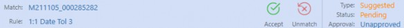
Accepted
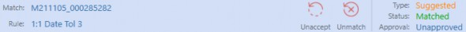
Approved
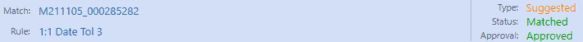
Figure 8.26
Approver/Administrator (Approval required):
Pending
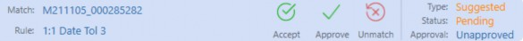
Accepted
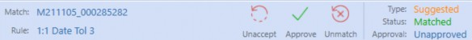
Approved
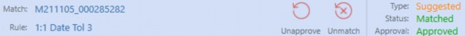
Figure 8.26 (cont.)
Using Transaction Matching › Matches Page › Detail Match Pane › Detail Match Header
Manual Matches
Manual matches are transactions Matched by a User from the Transactions page. Manual matching can be performed by the Preparer, Approver, or Administrator. Upon match, the system will update the match type and the status, identifying the User ID and time and date stamp when the match occurred.
The User actions allowed for a manual match include the ability to unmatch, approve, or unapprove (if utilizing this option) depending on security and match state. If the manual match needs to be Unmatched, the Preparer can perform this action if it is not in the Approved state. If Approved, no additional action can be taken by the Preparer. This differs for the Approver and Administrator roles; these roles can unmatch at any time, even if the match is in the Approved state. Also, the system will keep track of the User ID and the date and time stamp of the User who Approved the match. Below are detailed screenshots of the action icons available for manual matches based on the User role, match status, and match approval.
Using Transaction Matching › Matches Page › Detail Match Pane › Detail Match Header › Manual Matches
Manual Match
Preparer (Approval required):
Matched
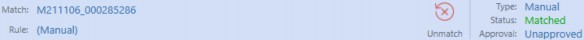
Approved
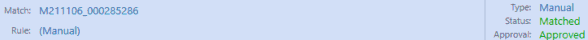
Figure 8.27
Approver/Administrator (Approval required):
Matched
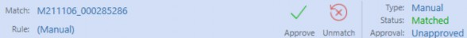
Approved
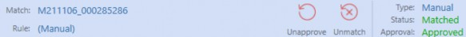
Figure 8.27 (cont.)
Using Transaction Matching › Matches Page › Detail Match Pane › Detail Match Header
Comments
Comments can be added to a match at any time, regardless of the status. All roles, except for the Viewer role, can add commentary. Once added, comments cannot be edited or deleted within the match. If comments are added to the match and the match is subsequently Unmatched, all comments made on the match will be deleted. To add a comment, you will select the Comments icon, as shown in Figure 8.28, which will navigate to the Commentary page as seen in Figure 8.29.

Figure 8.28
You can type a comment in the bottom box and select the Add icon. The comment is added to the match with the User’s ID and date and time stamp for audit purposes. Once a comment has been added to the match, the Comments icon will move from blue to green as a visual indicator that a comment has been added.
There is no limitation to the number of comments added to a particular match. Also, note that commentary added at the transaction level can be viewed in the right portion of this screen. Commentary cannot be added to a transaction from the Match pane. Adding commentary to a transaction is done from the Transactions page and will be discussed in detail later in the chapter.
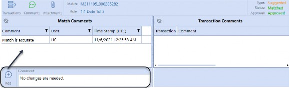
Figure 8.29
Using Transaction Matching › Matches Page › Detail Match Pane › Detail Match Header
Attachments
Similar to comments, attachments can also be added to a match at any time in the process, regardless of the match status or approval. Only the Preparer, Approver, or Administrator roles can upload, or delete documentation, whereas all roles can view supporting documentation if they have access to the match. You can upload as many files as needed to support a specific match. Select the Attachments icon to navigate to the Match Attachments pane.
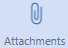
Figure 8.30
To upload a file, select the Upload icon in the bottom-left corner of the Attachments pane to initiate a file explorer dialog.
Figure 8.31
Then, navigate to your file and select Open, which will add it to the match. The system will keep track of who added the attachment with the date and time stamp.
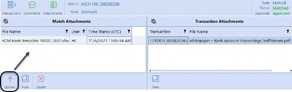
Figure 8.32
| Note: you can have multiple files on a match; however, you can only add one file at a time. |
Once a file has been added to the match – like with the Comments icon – the Attachments icon will also move from blue to green as a visual indicator that an attachment is associated with the match.
From a support perspective, files are typically in the following formats: PDF, HTML, MHT, RTF, DOCX, XLS, XLSX, CSV, Text, Image, and Zip files (to name but a few). Outside of XML, the system does not limit the file format but assumes the User viewing the document will have the software necessary to open the specific file. Each file cannot exceed 2 GB. Also, each file must have a unique name. If the User uploads a file with the same name, the system will overwrite the existing file accordingly.
If you have access to the match, you will have the ability to view any of the supporting documentation attached. In the Match Attachment pane, displayed in Figure 8.32, Users can view documentation that has been added on the match, or on a transaction within the match. To view the support, highlight the file and select the View icon.
| Note: the View icon on the match will only appear after a document has been selected. Also, you can only view one document at a time. |
When viewing, the system will open the file in the software required, or pop up a dialog asking you what application you would like to open the file (e.g., Notepad, Wordpad, etc.). The file being reviewed is read-only and changes made will not automatically be saved back to the system.
Files can also be deleted at any time, regardless of the status or approval state. Deletion can be performed by any of the roles that can add attachments (Preparer, Approver, or Administrator) and attachments can be deleted by any User even if they were not the User that uploaded the file. In addition, if the file is added to the match and the match is subsequently Unmatched, all files added during matching will be deleted.
| Note: Transaction-level documents can be viewed from the match but cannot be added or deleted from the Match Attachment Pane. This action must be performed from the Transactions page. |
Using Transaction Matching › Matches Page › Detail Match Pane › Detail Match Header
Transactions Icon
The Transactions icon appears in the far left of the header. If you navigate to Comments or Documents, this icon will return you to the Detail Match pane, which is the default when selecting a match.
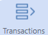
Figure 8.33
Using Transaction Matching › Matches Page › Detail Match Pane
Data Set Grids
Data set grids display the transactions that are included in the match. Each data grid will display all the fields associated with the transaction in the display order defined during setup. The columns have filter and sorting capabilities if needed.
The number of grids visible will depend on the Match Set. If set up as a two-way match, the User will see two data set grids in the order of succession, i.e., DS1 and DS2. If the Match Set is a three-way match, the User will see three grids. The name of the data set will also display for the User for ease of use. Figure 8.34 offers examples of two-way and three-way Match Sets.
Using Transaction Matching › Matches Page › Detail Match Pane › Data Set Grids
Two-Way Match
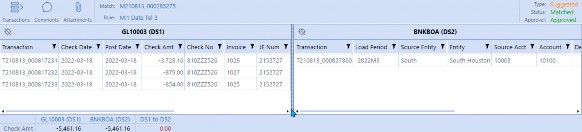
Figure 8.34
Using Transaction Matching › Matches Page › Detail Match Pane › Data Set Grids
Three-Way Match
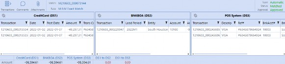
Figure 8.34 (cont.)
When viewing transactions in the grid, you may notice that the first column displays a transaction number. This is a system-generated Transaction ID. All transactions loaded into a Match Set will be assigned a Transaction ID as a unique identifier. Similar to the Match ID, the Transaction ID is a smart number which contains the Year, Month, and Day along with a unique ID. Below is a color-coded example to help break down the smart number into its pieces. Although the system is tracking when the data is loaded, the smart number provides more visibility to the End User related to the transaction.
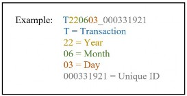
Figure 8.35
Using Transaction Matching › Matches Page › Detail Match Pane
Match Summary
The match summary will appear in the bottom-left corner and displays the Aggregation of the designated value field for each of the data sets. The system also automatically creates a Variance Calculation between the summary values for each data set for greater visibility.
| Note: The name of the summary line that appears will take on the field name from DS1. |
There are up to three summary levels available for each data set and the number of summaries selected is determined during implementation. Most Match Sets will be set with one summary level to tie out an invoice amount, check value, hours, counts, etc. However, multiple summary levels are nice to have for situations where you want to tie out multiple value fields and have visibility to the Aggregation.
Examples of where multiple summaries are used are in global Intercompany matching where you may want to see transaction amount, local amount, and reporting amount; or in Inventory where you may want to check part counts, price, or full calculated value; or in payable situations where you may want to tie out invoice gross, tax, and net amounts. Regardless of how you choose to use summary levels, at least one summary level should be selected for each data set. Examples of the different summary views are below.
Using Transaction Matching › Matches Page › Detail Match Pane › Match Summary
Single Summary
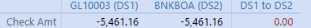
Using Transaction Matching › Matches Page › Detail Match Pane › Match Summary
Two Summaries
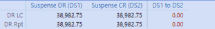
Using Transaction Matching › Matches Page › Detail Match Pane › Match Summary
Three Summaries
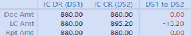
Figure 8.36
Using Transaction Matching
Transactions Page
The Transactions page is the most utilized page in the Transaction Matching solution and is the default when navigating to the Match Set. This is where Preparers will spend most of their time viewing transactions, performing manual matches, and creating Reconciliation detail items as needed.
The Transactions page displays transactions in the different statuses, allowing Users to view the Unmatched, Matched, Suspended, Pending Delete, or Deleted transactions if security permits. Being able to search the data sets to find specific transactions – regardless of their status – provides full transparency into the process.
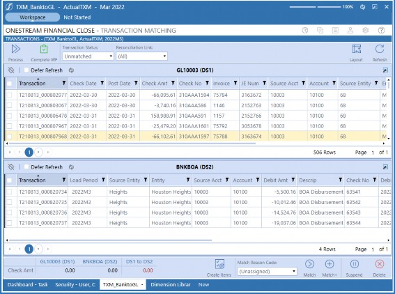
Using Transaction Matching › Transactions Page
Transaction Page Layout
In the next section, we will walk through the general layout of the Transactions page. There are three main areas which include: the header, the data set grids, and the action bar.
Using Transaction Matching › Transactions Page › Transaction Page Layout
Header
The header section of the Transactions page is where you will perform actions and filtering. You will notice that there are several icons available for you to action which include: Process, Complete WF, Layout and Refresh. The Process and the Complete WF icons at the top-left are identical to those on the Matches page. These icons are repeated for ease of use so that Users do not have to navigate from page to page to perform key functions like processing Match Rules or completing the Workflow. See the Matches page header section for a detailed explanation of the Process and Complete WF icons.
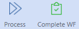
Figure 8.38
To the top-right, you will notice the Layout and Refresh icons. The Layout icon is a User-set preference and allows you to customize how you view the data set grids.
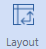
Figure 8.39
You can either view the grids horizontally (which stacks the grids one on top of the other) or vertically (which displays the data set grids side by side). Both layout options are shown in Figure
8.40. By default, the data set grids are presented horizontally. However, you can select the Layout icon to switch the current state. The layout selected will be saved for your User ID and will persist as you navigate the system.
Using Transaction Matching › Transactions Page › Transaction Page Layout › Header
Horizontal View
Using Transaction Matching › Transactions Page › Transaction Page Layout › Header
Vertical View
Figure 8.40 (cont.)
The Refresh icon is used to update the page for changes that have been made. Because multiple Users can be in a single Match Set – actioning matches or transactions at the same time – it is necessary to refresh the page periodically to ensure that you are viewing the most up-to-date information.
Figure 8.41
There are also predefined filters in the header to narrow the transactions being viewed. You can filter by Transaction Status and Reconciliation Link. By default, the Transaction Status filter is set to the Unmatched transactions because this is the view that is most used and where most of the work is performed. However, you can navigate to the other status views which include Matched, Suspended, Pending Delete, or Deleted if security permits. We will discuss each of the Transaction Status views in more detail later in this section. Also, note that these two filters appear across all the different status views. Additional filters are available if the Transaction Status is set to Matched. We will define the additional filters in the Matched View section below.
The second filter available in the transaction screen is the Reconciliation Link. With the integration between Transaction Matching and Account Reconciliations, you can push transactions from a Match Set to a Reconciliation to automate the creation of detail items.
Figure 8.43
| Note: Transactions can only be linked to a detail item once in a period. |
This filter provides visibility to what has already been pushed from the Match Set versus transactions that are not yet linked. Because this filter is only used when creating items, by default it is set to All to show all transactions. However, you can select the other options to show the state of the transaction as it relates to the Reconciliations when you are ready to create detail items. We will discuss linking transactions to Reconciliations in the Create Item section below.
Using Transaction Matching › Transactions Page › Transaction Page Layout
Data Set Grids
The main section of the Transactions page contains the data set grids, where all the detailed transactions will be presented. Leveraging the data set grids, you can select transactions to either view or action. Data set grids will display the detailed transaction fields defined during set up, and the fields provide you with the ability to search, sort, or filter.
Once you locate specific transactions, you can utilize multi-select functionality to select transactions across the different data set grids for actioning. The number of grids visible will depend on whether the Match Set is a two-way or three-way match. Also, as previously mentioned, depending on the number of transactions in the data set, the grids may contain multiple pages. If you are searching for certain transactions, you may have to navigate to the different pages to make selections prior to actioning. See Figure 8.44 for an example of the data set grids.
Figure 8.44
Using Transaction Matching › Transactions Page › Transaction Page Layout
Action Bar
The action bar is where you can view the transaction summary, as well as act on the transaction.
The summary is used to display the Aggregation of the designated value fields for each of the data sets. As you select transactions in the respective grids, the summaries will update to provide visibility to the total value. The system will automatically create a Variance Calculation between the summary values for each of the data sets to determine if the transactions selected are in balance. Users leverage the summary information to help determine if the selected transactions should be Matched.
There are up to three summary levels available for each data set and the number of summaries selected is determined during implementation. Most Match Sets will be set with one summary level; however, multiple summary levels are nice to have for situations where we want to tie out multiple value fields prior to matching. As touched upon in the Match Summary section, some examples include Intercompany where we want to tie out the invoice amount in the Transaction currency and Reporting currency to ensure proper eliminations, or in a contractor situation where we may want to tie out hours and amounts on the contractor’s invoice.
Figure 8.45
Tolerances can be set on any of the summary levels which will prevent Users from creating a match if the variance is outside the tolerance set. Regardless of how you choose to use summary levels, at least one summary level should be selected for each data set.
| Note: The name of the summary line that appears will take on the field name from DS1. |
See the Match Summary section above for more information on Summary Calculations and to review specific examples.
As implied by its name, the Action Bar is where you will also find the action icons related to transactions. There are multiple actions that can be performed and the icons available will depend on the status of the transaction. We will walk through the different transaction statuses in detail and define what actions can be performed and – more specifically – why you may action the transaction in that way. Let’s begin, however, by simply viewing a single transaction and the transaction details where you can add comments and documents or drill back to transformations.
Using Transaction Matching › Transactions Page
Transactions
Within the Match Set, Users will only have access to transactions based on their security. You can view transactions and all their related fields from the data set grid. If you want more information about a transaction – like Transformation Rules used, comments added, or documents attached – you can open the transaction details.
Using Transaction Matching › Transactions Page › Transactions
Viewing Transaction Detail
The Details icon provides additional information about a transaction. From this page, you can add or view transaction-level comments and attachments. By default, the Details icon is hidden and only activates when you select a transaction in the data set grid. Upon selecting the transaction, the Details icon will appear in the action bar.
There is a Details icon for each data set respectively; however, the icon will only appear based on the transaction selected. If you select a transaction in each grid, you will see three icons – one for each data set (Figure 8.46). However, if you only select a single transaction in DS2, you will only see a single icon for Details 2. Also, note that if you select more than one transaction in a specific data set grid, the Details icon will disappear as details can only be viewed one transaction at a time.
Figure 8.46
When selecting the Details icon, you will receive a dialog box. The dialog displayed will depend on the transaction status. Transactions in the Unmatched, Suspended, Pending Delete, or Deleted status will have a single Transaction Detail view as shown below. The dialog will display the Transaction ID and the Transaction Status. Based on the status, certain action icons will appear in the top-right corner. These icons are the same icons that are visible in the Action Bar on the Transactions page. Presenting the action icons in the dialog box allows the User to be more efficient when adding information to a transaction.
Figure 8.47
For those transactions in the Matched state, the dialog will have two tabs: Transaction Details and Match Details, as shown in Figure 8.48. Users can still interact with the transaction as defined above but will also have visibility into the match information for which this transaction belongs. Match Details will present the Matches Pane (as previously defined in the Matches page section) and display the match-related action icons available based on the User’s security.
Figure 8.48
Using Transaction Matching › Transactions Page › Transactions
Transactional Comments and Attachments
Comments can be added to a transaction at any time, regardless of the transaction status, from the Transaction Details dialog. All roles, except for the Viewer role, can add commentary. Once added, comments cannot be edited or deleted.
Figure 8.49
The Transaction Details page defaults to the Comment view but can also be accessed by selecting the Comments icon.
Figure 8.50
To add a comment, type into the comment box at the bottom of the page and select the Add icon. The comment will be added to the transaction with the User’s ID and date and time stamp for audit purposes. Once a comment has been added to the transaction, the Comments icon will move from blue to green as a visual indicator that a comment has been added. There is no limitation on the number of comments added to a transaction.
Similar to comments, attachments can also be added to a transaction at any time in the process, regardless of the transaction status. Only the Preparer, Approver, or Administrator roles can upload or delete attachments, whereas any role can view them. You can upload as many files as needed.
Select the Attachments icon to navigate to the Attachments pane to add documentation.
Figure 8.51
To upload a file, select the Upload icon to initiate a file explorer dialog, then navigate to your file and select open. This will add the document to the transaction.
Figure 8.52
The system will keep track of who added the file with the date and time stamp. Once a file has been added to the transaction – as per the Comments icon – the Attachments icon will also move from blue to green as a visual indicator that a file is associated with the match.
Figure 8.53
From the data set grid, you will be able to see if comments or attachments have been added to a transaction. By default, each data set grid has a system column titled Additional Info. If a comment or attachment has been added to a transaction, the check box will be active, to provide a visual indicator for the User.
Figure 8.54
Using Transaction Matching › Transactions Page › Transactions
Drill Back
Drill back provides you with visibility into the transformations performed on transactional data. As noted in the administration section, above, aligning transactional data is critical when integrating with Reconciliations. Being able to leverage Transformation Rules to map Source Dimension fields to the Target is critical to ensure integration is successful. However, because transaction data is not stored in Stage, the User does not have the native drill down capabilities to be able to view the transformations that have been performed. Being able to view transformations helps to resolve issues when viewing transaction details.
To navigate to the drill back, you first navigate to the Transaction Details pane as defined above. From this page, select the Drill Back icon in the top-left corner.
Figure 8.55
This will update the page to the transformation details where you will see the Dimensions, Source Values, Target Values, and Rule information. Although no changes can be made from this screen, it is useful to understand if anything was not properly transformed. See Figure 8.56 for a transformation view.
Figure 8.56
Using Transaction Matching › Transactions Page
Transaction Status Views
Next, we will move into the different Transaction Status views available to the User. You can set your current view by updating the Transaction Status Filter. Each view provides different actions that can be performed, and the actions will vary based on the User’s security.
The views available include:
Unmatched
Suspended
Pending Delete
Deleted
Matched
Using Transaction Matching › Transactions Page › Transaction Status Views
Unmatched View
The Unmatched view is the default view for the Transaction page, and this is where you will perform the majority of your work. Select the transactions desired, review the Summary Calculations, and then select the appropriate action.
Figure 8.57
The different action icons available in the Unmatched view include the ability to create Reconciliation detail items, as well as match, suspend, or delete transactions as needed. Users can also assign Reason Codes if desired. Each of the icons are shown in Figure 8.58 and will be defined in more detail below.
Figure 8.58
Using Transaction Matching › Transactions Page › Transaction Status Views › Unmatched View
Match Reason Codes
Reason Codes are created by the Administrator and are specific to a Match Set. Reason Codes are used to tag transactions for additional reporting. You can select a Reason Code from the drop-down prior to creating a match or suspending a transaction.
Figure 8.59
Using Transaction Matching › Transactions Page › Transaction Status Views › Unmatched View
Quick Match
A quick match is the ability to select Unmatched transactions and move them to the manual match state with no additional action needed. The Quick Match icon (Figure 8.60) is used when you do not need to add comments or attachments. When creating a quick match, you have the ability to select a Reason Code prior to selecting the Match icon. Once Matched, the transactions are moved to the Matched status and are viewable in either the Matches page or through the Matched view.
Figure 8.60
Match +
Match + is similar to the quick match process in that it creates a manual match. However, Match + allows you to add comments and attachments prior to accepting the match.
Figure 8.61
When you select the Match + icon, the system will launch a Pending Match dialog box. From within this page, you can add comments and attachments as required. You can also assign a Reason Code from the Match + dialog box.
Figure 8.62
Adding comments and attachments is common in the manual match process. A Match Set can be enabled to require either a comment or attachment, or both, prior to matching. If either of these options is turned on, you will no longer see the Quick Match icon and will only have the Match + icon available. If you fail to action appropriately, you will receive an error message, as shown below, and the match will not be complete.
Using Transaction Matching › Transactions Page › Transaction Status Views › Unmatched View › Quick Match
Document Required
Using Transaction Matching › Transactions Page › Transaction Status Views › Unmatched View › Quick Match
Comment Required
Figure 8.63
Adding comments and attachments was covered in the Detail Match Header section, above. If you need more information, please reference this section.
Using Transaction Matching › Transactions Page › Transaction Status Views › Unmatched View
Manual Match Tolerance
As part of the manual match process, Administrators can set a match tolerance on the manual matches made. Tolerances prevent Users from creating manual matches with significant variances. The match tolerance can be set on any (or all) of the summary levels. When set, you will not be able to create a match if the variance is not within the tolerance. If you attempt to create a match outside of the tolerance, you will receive an error message.
Figure 8.64
Although tolerances can be set, there are options within the Match Set to allow the Approver or the Administrator to bypass the tolerance restriction. This will prevent Preparers from creating matches with significant variances but provides flexibility for higher-level roles.
Using Transaction Matching › Transactions Page › Transaction Status Views
One-Sided Match
One-sided matching allows you to create a manual match without selecting transactions within all data sets. This is utilized when Users need to clear or net transactions within a given data set, or if there are transactions that will never be received by the other sources, like fees or charges.
To create a one-sided manual match, select the transactions within the data set and then select either the Quick Match or Match + icon. You must select at least two transactions to create a one-sided match. If you try to move a single transaction, you will receive an error message (Figure 8.65). Figure 8.66 is an example of a one-sided match.
Figure 8.65
Figure 8.66
Using Transaction Matching › Transactions Page › Transaction Status Views › One-Sided Match
Suspending a Transaction
Suspending transactions is the ability to set Unmatched transactions aside. You may want to do this to reduce Unmatched transactions in the data set grids for better visibility while manually matching, or to remove Unmatched transactions that you have already reviewed and analyzed.
Suspended transactions are just that – ‘suspended’ – which means not only are the transactions no longer available to be manually Matched, but they do not participate in the Match Rules process. These transactions will remain Suspended in the current and all future periods until a User recalls them back into the Unmatched grid. There is also a Match Set option available to automatically unsuspend. If this is turned on, Suspended transactions will be released back into the Unmatched state once the Process is initiated – either manually or through the Task Scheduler in a future period.
Preparers, Approvers, and Administrators have the ability to suspend transactions. To suspend, select the transactions within the data set grids and select the Suspend icon in the bottom-right corner.
Figure 8.67
Upon selection, you will receive a dialog box to assign Reason Codes if desired.
Figure 8.68
Once Suspended, you will see a warning message in the top-right portion of the solution which appears on the screen regardless of the page you navigate to. Because these transactions are set aside and are not being actioned, Suspended transactions are reported on the scorecard to ensure Users are aware that there are transactions not participating in the process.
Figure 8.69
Using Transaction Matching › Transactions Page › Transaction Status Views › One-Sided Match
Deleting a Transaction
When working in Transaction Matching, there are times when data may get loaded into the system which is not valid or which needs to be removed and reloaded. Bad data will sit in an Unmatched state if not corrected, and will create noise for the User. Although you can suspend the transactions, if the data is never going to be used, it may be best for you to request deletion.
The process of deletion will depend on the amount of bad data. If the issue resides with a specific file load, it is best practice to have the Administrator unmatch all the transactions for the specific data load, then clear the file and reload the corrected data. However, if the issue is not found until late in the process, or there are only a few transactions that need to be removed, the unmatching, clearing, and reloading process may create a lot of work for Users. Therefore, the ability to delete helps facilitate removing small amounts of data from the system.
Deletion functionality is available for Unmatched and Suspended transactions and is a rigorous multi-step process. To truly remove a transaction from the system, the transaction must move from the Unmatched or Suspended state to Pending Delete then from Pending Delete to Deleted and then from Deleted to the final step of Removed. This is purposeful to ensure that transactions are not arbitrarily being deleted from the system.
At any time prior to selecting the Remove icon, Users with the appropriate security will have the ability to recall the transactions. The Recall icon will move the transactions from the current state (Pending Delete or Deleted) back to the Unmatched state. Preparers, Approvers, and Administrators have the ability to request deletion and also have access to the Pending Delete view. However, only Administrators have access to the Deleted view. Also, there is segregation of duties to remove a transaction, which means that I cannot approve a Pending Delete and also remove the transaction.
To delete a transaction, select the applicable transactions and then select the Delete icon.
Figure 8.70
The transactions status will update to Pending Delete and will only be viewable from the Pending Delete view as discussed below.
Using Transaction Matching › Transactions Page › Transaction Status Views › One-Sided Match
Creating an Item
From the Unmatched or Matched view, Users have the ability to automatically create detail Reconciliation items. This is referred to as the push process because it pushes the transactions from the Match Set into the respective Reconciliations. The push process can update multiple Reconciliations in a single push, and this process can also utilize the Task Scheduler. In the following section, we will discuss the manual push process. See the Implementation section for instructions on how to set up the Push Process via the Task Scheduler.
The first step in creating detail items is to filter the transaction view by updating the Reconciliation Link filter in the header. You should select the No Detail Item from the drop-down as shown.
Figure 8.71
This will filter for all transactions that are not currently associated with a Reconciliation. Transactions can only be linked to a Reconciliation once in a given Workflow period. If you attempt to push a transaction that is already linked, you will receive a task activity error; therefore, it is important to perform this filter process first, to ensure you are only working with available transactions.
To create items, you can either select specific transactions or push all transactions from the grids. If you prefer to push specific items, you will need to select the transactions from the grids prior to selecting the Create Items icon.
Figure 8.72
If you choose to push all transactions, this will be done from the Create Detail Items dialog.
Figure 8.73
Within the Create Detail Items dialog, there are many different options the User can select. The options are the same as what was defined in Chapter 4 regarding the pull process. We will review them again here, for your convenience.
| Field | Definition |
|---|---|
| Transactions | Drop-down contains the selection options for the data set: • Selected (Default) – Indicates that the transactions selected via the multi-select box in the grid will be pulled into the Reconciliation. Selections can be made across multiple pages as needed. • (All) – Regardless of the transactions selected in the grid, all transactions across all pages will be pulled into the Reconciliation. • (None) – Regardless of the transactions selected in the grid, no transactions will be pulled into the Reconciliation for that data set. |
| Reverse Sign | Reverse sign is applied to the amount fields mapped (Detail Amount (if multi-currency), Account, Local, and Reporting) so that it will display the value in the opposite direction for Reconciliation purposes. If the value is a positive $2,000 and reverse sign is selected, the value will pull into the Reconciliation as a negative $2,000. |
| Item Name | Mapped from the Match Set, the item name will populate based on the field identified. The field name is denoted within the brackets e.g., [Check No]. Users can override the field by typing into the box. If the User overrides, the typed information will populate to all the transactions pulled. If Aggregation is set to the date field or Total (where multiple item names can exist), or if the item name field is left blank, the item name will default to “Transaction Matching Item” because the item name field must be populated when the item is created. Also, note that if the field is overridden, it cannot be reset by the User by typing in the |
| Field | Definition |
|---|---|
| field name with the brackets. To reset it back to the mapped field, the User will need to close the Create Detail Item dialog and relaunch. | |
| Aggregation | Aggregation is the ability to sum transactions in a meaningful way. This will minimize the number of transactions presented in the detail items grid on the Reconciliation. Transactions will aggregate for each data set independently. If the Reconciliation is a multi-currency Reconciliation, the system will aggregate first, based on the currency codes prior to performing the Aggregation defined below. Although aggregating, the detail is not lost. From the Reconciliation, the User can drill back to the transaction detail using the Drill Back icon in the Reconciliation Support screen. Aggregation is highly encouraged for high-volume Accounts. Possible Aggregation methods are as follows: • None – Each transaction selected will be pulled into the Reconciliation and create a distinct detail item. Typically, utilized on lower-volume Accounts. • Total – Summarizes all transactions selected to a single detail item based on currency codes. If the Reconciliation is a single-currency Reconciliation, there will be one detail item for each data set from which transactions are pulled. If the Reconciliation is multi-currency, the system will first sum the transactions by currency code and pull the items into the Reconciliation, creating a detail item for each currency code and data set combination. The Total Aggregation option is used when there are a significant number of open items. Although the items will be aggregated, there is still drill down capability. However, if aging on the Reconciliation is important, the User should not use Total because the transaction dates are not considered upon Aggregation. When the item is created, the transaction date for the detail item will default to the month-end date. • Transaction Date – Summarizes the items based on the transaction date field identified in the Match Set mapping. The system will create a detail item for each unique transaction date and currency code combination (if multi-currency is used). This still minimizes the number of items created but also supports aging on the Reconciliation. • Item Name – Summarizes the items based on the Item Name field identified in the Match Set mapping. The system will create a detail item for all transactions with the same item name and currency code combination. This will minimize the number of items created but also loses the aging as the transaction date on the items will default to the month-end date. |
| Item Type | Presents the Item Type list created by the organization. By default, the Item Type is set to Matching_DS1, 2 or 3 depending on the dataset being referenced. However, the User can select any Item Type from their drop-down prior to pushing the items into the Reconciliation. |
| Reference 1 | Mapped from the Match Set, the Reference 1 field will populate based on the fields identified (up to two fields can be assigned). The field name is denoted within the brackets, e.g., [Invoice]. Users can override the field by typing into the box. If the User overrides, the typed information will populate to all transactions pulled. If Aggregation is used, the reference field will be replaced with data set name and transaction status (Matched or Unmatched). If the reference field mapping is deleted, and |
| Field | Definition |
|---|---|
the field left blank – regardless as to whether you aggregate or not – the reference field will appear blank when pulled into the Reconciliation. Also, note that if the field is overridden, it cannot be reset by the User typing in the field name. To reset it back to the mapped field, the User will need to close the Create Detail Item dialog and relaunch. | |
| Reference 2 | Mapped from the Match Set, the Reference 2 field will populate based on the field identified (up to two fields can be assigned). The field name is denoted within the brackets, e.g., [JE Num]. Users can override the field by typing into the box. If the User overrides, the typed information will populate to all transactions pulled. If Aggregation is used, the reference field will be replaced with how the transactions were selected (All versus Selected) and Aggregation utilized. If the reference field mapping is deleted and the field left blank – regardless as to whether you aggregate or not – the reference field will appear blank when pulled into the Reconciliation. Also, note that if the field is overridden, it cannot be reset by the User typing in the field name. To reset it back to the mapped field, the User will need to close the Create Detail Item dialog and relaunch. |
Figure 8.74
Once you have the options in place for each of the data sets, select the Create icon in the bottom-right corner of the dialog box. This will initiate a data management job that will run in the background. The status of the job will be reported in the Task Activity page. If the task job fails, the User can review the error message to determine why items were not created. Also, if you select the Refresh icon in the header, the No Detail Item grid will update, removing the items that were successfully pushed.
Figure 8.75
Using Transaction Matching › Transactions Page › Transaction Status Views
Suspended View
The Suspended view presents all the transactions in a Suspended state. As discussed above, these transactions have been set aside and do not participate in either automated or manual matching. Typically, Suspended transactions are only set aside for a short period of time while you work in the Unmatched grid. Once ready, the Suspended transactions are normally released back into the process as they are still required to be Matched.
Figure 8.76
To release the transactions, Users select the specific items from the grid and then select the Unsuspend icon. This process will update the status of the transactions from Suspended to Unmatched and the transactions will now be visible in the Unmatched view.
Figure 8.77
If the Suspended transactions are determined to be invalid transactions, and need to be removed from the system, you can also delete them. To delete, select the applicable transactions and then select the Delete icon. Transactions selected for deletion will update to the Pending Delete status. See the Pending Delete View for additional actions that can be performed.
Figure 8.78
Using Transaction Matching › Transactions Page › Transaction Status Views
Pending Delete View
The Pending Delete view presents all the transactions that have been selected for deletion but which are still awaiting approval. Deletion can be requested for transactions in either the Unmatched or Suspended state. Once moved to the Pending Delete state, these transactions are no longer available for the matching process.
Figure 8.79
Transactions in the Pending Delete state require approval to move them to the Deleted state. Only the Approver and Administrator roles can approve transactions for deletion.
To approve, select the transactions within the data set grid and then select the Delete icon, in the bottom-right corner of the page.
Figure 8.80
The system will display a message asking you to confirm that you would like to permanently delete the transactions. If you select OK, the state of the transactions will be updated from Pending Delete to Deleted. The transactions will still reside in the system, but are only viewable by the Administrator in the Deleted View. See the Deleted View section below to permanently remove the transactions from the system.
Figure 8.81
If the request for deletion was done in error and the transaction is still pending deletion, the User can recall the transaction at any time. To recall, select the applicable transactions and then select the Recall icon in the bottom-right corner. Recalling a transaction will move the item from Pending Delete to the Unmatched state regardless of where it originated from (Unmatched or Suspended). The recall function can be done by the Preparer, Approver, or Administrator role.
Figure 8.82
Using Transaction Matching › Transactions Page › Transaction Status Views
Deleted View
Transactions that have been Approved for deletion are moved to Deleted state and are only visible by Administrators in the Deleted view (Figure 8.83). Although the transactions are in the Deleted state, they still reside in the system until they are fully removed. This multi-step process (Pending Delete to Deleted to Removed) was created for control purposes to ensure that Administrators are confident in their decisions to purge transactions from the system. For further control around this process, the system also enforces segregation of duties between the Deletion and Removal process. The User authorizing the deletion cannot also remove the transaction from the system, thus ensuring a secondary review is performed. Once removed, the transactions are no longer available within the application and cannot be recalled.
Figure 8.83
To fully delete the transactions from the system, the Administrator will select the specific transactions from the data set grids and then select the Remove icon.
Figure 8.84
The remove process will permanently delete the transaction and you will receive a system message indicating the number of transactions that have been Deleted.
Figure 8.85
As mentioned above, because this is a permanent removal, the system enforces a segregation of duties between the deletion and removal. If you try to perform both actions, you will receive an error message and the transactions will not be removed.
Figure 8.86
As with the other views, if at any time (prior to removal) the deletion was determined to be performed in error, the Administrator can select the transactions and then select the Recall icon to move the transactions back to the Unmatched state.
Using Transaction Matching › Transactions Page › Transaction Status Views
Matched View
The final view available for Users is the Matched View. Opposite to the Matches page – that starts with the match and displays the transactions – the Matched View starts with the transactions and allows you to drill to the match. Having visibility into transactions that are Matched allows Users to search for transactions that may have been Matched in error.
Figure 8.87
When in the Matched View, you may notice additional columns are presented in the data set grids. The grid updates to include the match Reason Code, the Match ID, and the match period to assist Users in sorting and searching. In addition to searching the new match columns, you can also view the match information on the transaction through the Details icon, as described previously.
In addition, depending on your security and the match type associated with the transaction (see Figure 8.24), you may also have the ability to Unmatch from this view. If while reviewing the transaction you determine it needs to be Unmatched, you can select the transaction and then the Unmatch icon at the bottom-right corner of the page. This will unmatch all transactions in the match – even if not physically selected in the grid.
Figure 8.88
Also, you may have noticed that the Matched View has additional filter capabilities in the header.
Figure 8.89 The additional filters are defined in Figure 8.90:
| Field | Definition |
|---|---|
| Match Reason Code | Allows Users to filter the transactions in all data sets based on the Reason Code assigned to the match. |
| Match Period | Filters the Workflow period of when the match occurred. The Match Period is used for cutoff purposes (to be discussed below). The selections available are All, Current, or Future. |
| Import Period | Filters the Workflow period of when transactions were loaded into the solution. This is limited to the current period and any historical periods. This filter is also used for cutoff purposes. |
Figure 8.90
The new filters are used to define cutoff. Cutoff is critical when creating Reconciliation detail items. As mentioned at the beginning of this chapter, matching is a continuous process; transactions continually match as new data is loaded and Match Rules are run. Although leveraging the Workflow period, it is important to understand that the state of a transaction, Unmatched or Matched, is not time-based. This means that if I have a transaction Unmatched in 2022M3 that is subsequently Matched in 2022M4, the transaction will no longer appear Unmatched in the system regardless of the period I view.
Let’s walk through an example. Assume you are preparing your M3 Reconciliation which has a balance of $100. The Reconciliation is normally supported with the Unmatched transactions at the end of the period. If no new data is loaded, and Match Rules run for M4, you can simply push the Unmatched transactions from M3 which total $100 and your Reconciliation is complete. See the example in Figure 8.91.
Reconciliation: General Ledger Balance for 2022M3 = $100
| Transaction Matching: 2022M3 Transaction Statuses | |
| Invoice # | Unmatched |
| AB123 | $10 |
| BD231 | $30 |
| DC321 | $60 |
| Total | $100 |
Create Item through Single Push: Unmatched Transactions only Figure 8.91
However, if you are loading data into future periods while in the process of reconciling the current period, 2022M3, you may need to include transactions Matched in the next period, 2022M4. As transactions are not Workflow time-based, they would show as Matched in M3 but were actually Unmatched for the period of Reconciliation. This is where the filters can assist. If you navigate to the Matched view and set the Matched Period filter to Future Period, the system will identify historical transactions that were Matched in the period of M4 (or later) but which would be considered Unmatched for the current period. See the example in Figure 8.92.
Reconciliation: General Ledger Balance for 2022M3 = $100
| Transaction Matching: 2022M3 Transaction Statuses | |||
| Invoice # | Unmatched | Matched | Matched Period |
| AB123 | $10 | 2022M4 | |
| BD231 | $30 | 2022M4 | |
| DC321 | $60 | ||
| Total | $60 | $40 | |
Create Item through Two Push Processes: Unmatched Transactions and Matched Transactions filtered for Match Period=Future Period
Figure 8.92
Therefore, if you are loading data daily, and you need to ensure proper cutoff, you cannot simply use Unmatched transactions for 2022M3. You will need to push Unmatched transactions of $60 from the Unmatched view as well as $40 of Matched transactions from the Matched View, filtering the Match Period for Future Periods. Here is a filter example.
Figure 8.93
Using Transaction Matching
Roles and Responsibilities
The roles available in Transaction Matching are similar to the Account Reconciliation solution. The system supports Preparers, Approvers, Administrators, Viewers, or Commenters. However, unlike Reconciliations, matching does not require a Preparer and Approver on every Match Set, nor does the Match Set support multiple levels of approval.
Matching is more of a process to assist in preparing Reconciliations, and the controls typically reside through the Reconciliation process. For those Match Sets that are critical and require more structure, the different roles are available along with Workflow and the segregation of duties.
However, in situations where one person owns the process end to end, you may only assign the Administrator role. As an Administrator, the User will have the ability to manage the Match Set, update rules, unmatch matches, etc.
There really is no specific ‘right way’ to set up matching security. It really is processed-based, which is why role assignment is very flexible and set on a Match Set by Match Set basis.
Common across all Match Sets is the assignment of the Viewer and Commenter roles. The Viewer role provides the ability to access the matches and transactions without being able to make any changes. Similarly, the Commenter role allows the User to view but also add comments at the match or transaction level. These roles are granted in situations where you want to provide visibility to upper management or other departments. Also, you would typically assign one of these roles to the auditor so they can perform their review and testing.
Using Transaction Matching
Reporting
Reporting is important in monitoring the matching process. The solution delivers standard Reports and Dashboards, giving Users important insights into transactions and matches. In addition, Users can leverage reporting capabilities within OneStream. Being able to create your own visualizations allows you to analyze the information in a way that is meaningful.
Solution reporting can be accessed by navigating to the Scorecard page. By default, you will land on the Scorecard but can subsequently navigate to the Analysis page utilizing the icons in the top-left corner of the header. The information presented to the User will be dependent on the User’s security, and you can limit the data retrieved based on the Time Period filter. This filter will default to Periodic, but can be updated to show Year to Date (YTD) or Trailing 12 months.
The header also contains a Refresh icon in the top-right corner. Reports and Dashboards will update to the current information the first time you navigate to this page for the specific period. Once the data is retrieved, the page will not update automatically unless you change the Time Period filter or navigate to another Workflow period. Therefore, if the Dashboard is populated, and additional matching or processing occurs within the period being viewed, the reporting will not update until you select the Refresh icon. This is by design for performance purposes. Rather than updating the data dynamically, we cache the information and update on demand. The time stamp of the last refresh is displayed underneath the Refresh icon for your reference.
Note: Reporting is only viewable in the Windows application. If you try to view a Report through the browser, you will receive the following message on the Scorecard and Analysis pages: Figure 8.95 |
Figure 8.94
Using Transaction Matching › Reporting
Scorecard Page
The Scorecard is a Dashboard that delivers detailed information and graphical views of the matching process. The User will have visibility into important information about the transactions and the matches within the Match Set, based on their security.
Figure 8.96
The values displayed will depend on the Time Period filter set in the header. We will define the five key sections of the Dashboard below. Within each section, you can print or export the information, inspect the underlying data, or expand the screen leveraging the icons shown below.
Figure 8.97
Using Transaction Matching › Reporting › Scorecard Page
Transaction Information
The Transaction Information section (Figure 8.98) presents four key transactional metrics which include:
Total number of transactions
Total number of transactions in the Unmatched state
Total number of transactions that have been Suspended
Last date transactions were imported
Figure 8.98
Using Transaction Matching › Reporting › Scorecard Page
Match Information
The Match Information section presents key information about the matches. This section will display three key match metrics:
Total number of suggested matches awaiting acceptance
Total number of matches awaiting approval
Last date the Match Rule process ran
Figure 8.99
Using Transaction Matching › Reporting › Scorecard Page
Matches by Type
Matches by Type is a pie chart that displays the total number of matches by the three match types: Automatic, Suggested, and Manual. If you hover over any portion of the graph, the system will display the total number of matches for that specific type, as well as the specific type as a percentage of total matches.
Figure 8.100
Using Transaction Matching › Reporting › Scorecard Page
Top 20 Rules
The Top 20 Rules by Transactions section displays the top relevant Match Rules from highest to lowest. The chart is a stacked column chart with each column displaying the total number of transactions Matched by the specific rule, detailed by specific data set.
Figure 8.101
Using Transaction Matching › Reporting › Scorecard Page
Transaction Status
The Transaction Status section presents a stacked bar chart for each data set, displaying the number of transactions by status Unmatched, Matched, Suspended, Pending Delete, and Deleted.
Figure 8.102
Using Transaction Matching › Reporting
Analysis
The Analysis page has a list of delivered Reports in the solution. Each of these Reports is intended to highlight more detailed operational information regarding the Match Set. There are four different Reports that cover analysis around the transactions, matches, Match Rules, variances, etc. Each of the Reports is defined in detail below.
Using Transaction Matching › Reporting › Analysis
Transactions by Data Set
Transactions by Data Set displays total transaction counts broken down by period, by data set, and by the specific data loads that have occurred. This Report assists in determining if there are any issues with the data or data files. If you have a specific load, and 100% of the transactions are Unmatched, it may be an indication that a data issue exists.
Within the Report, you will see the number of transactions by status which include Unmatched, Suspended, Manual, Suggested, and Automatic, as well as in Total. In addition, you can see the total transactions Matched as a percentage of total transactions.
Figure 8.103
Using Transaction Matching › Reporting › Analysis
Matches by Rule
Matches by Rule displays total matches, transactions, Pending matches, and matches in the Unapproved state. This information is presented for each rule included in the Workflow. The Report will also display the percentage of Accepted and Approved, as well as the Last Match Date.
Figure 8.104
Using Transaction Matching › Reporting › Analysis
Matches with Variance
The Matches with Variance Report lists all matches containing a variance in amounts.
Figure 8.105
This Report can be filtered, sorted, and/or exported, and is used to generate adjustments or Journal Entries. You can also select a match from the grid with the ability to display the details by selecting the Details icon in the top-right corner.
Figure 8.106
Using Transaction Matching › Reporting › Analysis
Matches with Comments or Attachments
This Report is exactly as titled; it lists matches that contain comments or attachments. Similar to above, Users can select a match and – utilizing the Details icon – drill to the specific match to be able to view the comments and attachments.
Figure 8.107
Using Transaction Matching
Conclusion
As this book comes to an end, hopefully we were able to provide you with insight into all the key areas of the OneStream Financial Close (OFC) solutions. Our intent was for you to walk away with the knowledge to set up and administer the solutions, implement best practices, and understand how Users will utilize the system on a regular basis. We covered the two key processes – Account Reconciliations and Transaction Matching – but we anticipate future growth around OFC. The intent for this suite of solutions is to grow into a full Record-to-Report process to drive the full Financial Close process. Thank you for taking the time to read this book, and we wish you well in your Close endeavors!